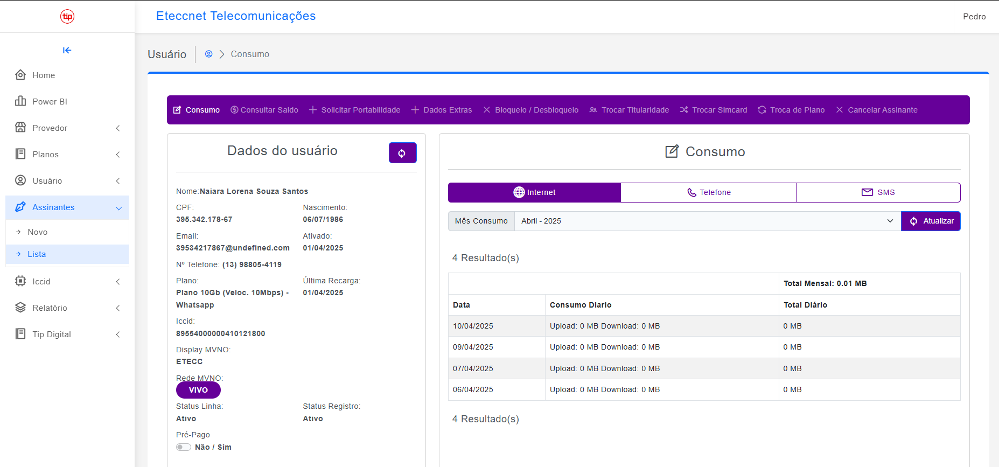
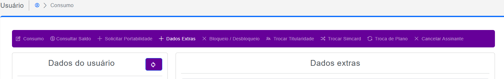

Telefonia Móvel
MVNO
Atualizado em: 24 Dez 2025
Guia de Ativação e Suporte: MVNO TIP Brasil
Procedimentos para ativação de chips, configuração de APN, portabilidade e resolução de problemas técnicos integrados ao sistema MK.
Link do Portal:
mvno.tipbrasil.com.br
1. Ativando o Chip
- No MK, acesse a aba Integradores > Menu Telefonia.
- Vá em Assinantes e selecione o nome do cliente.
- Clique em "Nova Assinatura".
- Selecione o contrato do chip (marque "Portabilidade" se for o caso).
- Insira o número do SIMCARD (encontrado no cartão molde do chip).
- Após ativado, o número aparecerá no portal TIP Brasil como ICCID.
- Clique em "Ok" e realize a Sincronização com o MK.
2. Configuração de APN (Internet)
iOS
Ajustes > Celular > Selecionar Chip > Rede de Dados Celulares.
APN: isp.br
Android
Configurações > Conexão > Redes Móveis > Pontos de Acesso > Adicionar.
Nome: TIP Brasil | APN: isp.br
Protocolo: IPv4/IPv6
3. Portabilidade
Prazo médio: 07 dias úteis.
Erros Comuns:
- Divergência de titularidade entre operadoras.
- Número inativo ou inexistente na operadora antiga.
- Cliente não validou o SMS de confirmação dentro de 24 horas.
Dica: BP = Bilhete de Portabilidade.
4. Verificando Consumo e Bloqueio

Interface de visualização de consumo no Portal MVNO
| Situação | Ação Necessária / Detalhes |
|---|---|
| Erro de Sincronização MK | Acionar o setor de T.I. |
| Consultar Consumo | Portal MVNO > Assinantes > Lista > Dados do Usuário > Consumo. |
| Inadimplência (Fibra/Chip) | O MK realiza o bloqueio automático. Verifique pendências financeiras. |
| Recargas | Automáticas no 1º dia do mês. Extras requerem autorização da gestão. |
Como realizar ligações:
- Local: Digitar apenas o número (sem DDD).
- Interurbano: Digitar 0 + DDD + Número (ex: 011999999999). Não utiliza o código 015.
Casos Excepcionais (Liberação Extra)
Caso seja necessária a liberação de minutos extras ou pacotes adicionais de dados, o procedimento deve ser feito apenas mediante autorização da gestão através da tela de gerenciamento:

Caminho: Portal MVNO > Gestão de Planos > Aditivos de Pacote
Lembre-se: Toda alteração manual gera log de auditoria no sistema.